In probability theory, the expected value of a random variable is the weighted average of all possible values.
Calculate the expected return of an investment portfolio
Imagine that your friend offered you a chance to play his game of dice. You have to pay \$1 to play and he keeps your money if you roll anything other than a 6. Would you play it? If you answered "it depends", you are ready to learn about expected value.
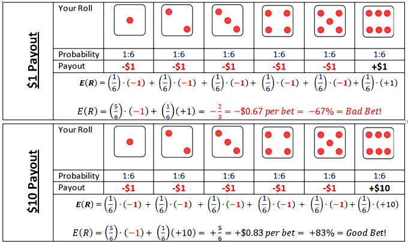Is a bet that doesn't always pay out, but pays out big when it does a good bet? Is playing the lottery a good bet? Would it be a good bet if tickets were only \$0.10 instead of \$1.00?
If your friend told you he would pay you \$1 every time you roll a 6, you would be crazy to play. If your friend told you he would pay you \$10 every time you roll a 6, you would be crazy not to play.
Expected value is calculated by multiplying the probability that something will happen by the resulting outcome if it happens. In the two cases described above, there are 5 ways to lose and only 1 to win. But in scenario 1, you can expect to lose \$0.67 or 67% every time you bet, and in scenario two, you can expect to win \$0.83 or 83% with each bet. This is a confusing topic in statistics and finance because on any given roll, there are only two outcomes -- win or lose -- and neither outcome involves \$0.67 or \$0.83 increments.
But to understand expected value, you have to imagine playing a particular game hundreds of times. If you were to sit at your friend's apartment and play the dice game 100 times, imagine what your bottom line would be. Even though you lose most of the time you roll in the 2nd scenario, when you win, you win big. After 100 games, you could expect to be up (\$0.83 per roll) x (100 rolls) = \$83. If you were foolish enough to play the game in the first scenario 100 times you would expect to be down \$67 to your friend.
In finance, evaluating your expected return is important, but never as simple as evaluating a game of dice. Imagine that you are going to buy a house a year from today and you have \$20,000 saved for that investment. Because you are smart enough to be using a free online text book, you are probably savvy enough to know that you can invest the money for a year and get some return on it. You are considering investing that money into stock of a Ski/Snowboard Mountain in Colorado, so you go talk to your snowboarding friend who lives on your floor of the dorm. He tells you that any given winter could be hella gnarly, totally chillax or wicked bogus, depending on how much it snows. You start doing some research, and you realize that how the stock has performed has everything to do with how much it snows. You create three different categories based on snowfall and label them hella gnarly (HG), totally chillax (TC) and wicked bogus (WB). In recent HG winters, those with over 20 feet of annual snowfall, the stock has averaged a 25% annual return. In recent TC winters, those with between 10 feet and 20 feet of snowdrop throughout the season, the stock has averaged 10%. In WB winters, those with less than 10 feet of total snowdrop, the stock has averaged -20%. Ok, so now what? Should you buy the stock?
If you said "it depends," that's a good answer. Being as smart as you are, you investigate recent weather patterns and you decide that there is a 25% chance of an HG year, a 60% chance of a TC year and only a 15% chance of a WB winter. You understand that past performance is never a guarantee of future results, but still you are happy with your research and you project an expected rate of return for your \$20,000. How will it do?
Based on your research, you realize that the stock has an expected return that is calculated thus:
E[R]= (ProbabilityHG)x(ReturnHG)+(ProbabilityTC)x(ReturnTC)+(ProbabilityWB)x(ReturnWB) = (0.25)(25%) + (0.60)(10%)+(0.15)(-20%) = 6.25% + 6% + -3% = 9.25%
If you were to invest the stock in the ski mountain, year after year, and your research proves accurate, you could expect to receive an average of 9.25% return each year. That is your expected return.
Variance is a statistical concept describing the range around expected return within which an investment return can be reasonably expected to fall.
Explain the importance of a stock's variance and standard deviation
In probability theory and statistics, the variance is a measure of how far a set of numbers is spread out. It is one of several descriptors of a probability distribution, describing how far the numbers lie from the mean (expected value).
Understanding the concept of variance along with three typical asset classes -- money market, bonds, stocks -- can help you build a portfolio for any investor. Money market investments are very safe, they almost never go in the red, but they also don't pay high returns. Stocks are on the opposite end of the spectrum, going back and forth between red and black from year to year frequently, but over longer periods of time they usually pay higher premiums. Bonds are somewhere in the middle. They are safer than a stock, but riskier than a money market and their average returns reflect that.
This table shows how to calculate the variance of an investment outcome .
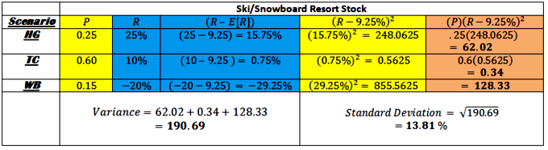Calculating variance is a 3 step process once expected return has been calculated. Calculate deviations from mean (blue), square the deviations (yellow), multiply the squared deviation by its original probability (orange). Get brownie points by taking the square root of that number and interpret its meaning in the form of a sentence.
You may not need to calculate variance yourself, but you should still notice how we got it. In the figure, we started with three scenarios and a probability (P) and return (R) associated with each. We did some math and ended up using the two blue columns to get the yellow one. Then we multiplied the two yellow columns to get the orange one. We get the variance from adding up the numbers in the orange column. Of the three numbers, we add (62, 0.34, and 128). Two are very big and one is very small. The small number comes from the TC scenario where the stock returns 10%, which is very close to our expectation of 9.25%. The bigger numbers come from winters that are extreme -- when the stock performs way above 9.25% (HG) or way below it (WB). The standard deviation can be read as a percentage. It means that, even though we can expect an average of 9.25% return on our stock over the course of 50 years, if we take any given year out and look at its performance, it is likely be somewhere within 13.81% above or below that figure.
In the discussion of expected return, we concluded that, based on your research, you can expect the Ski/Snowboard Resort in Colorado to have an expected return of 9.25% based on three distinct weather outcomes. However, if you invest your \$20,000 in that company and expect to have \$21,850 after a year, you must remember that this isn't a dice game that you can play over and over again. There will only be one result in this case and at the end of it, you have to make a down payment on a house. Is this a good investment idea?
What if your bid for a house won't be accepted unless you can put at least \$20,000 down? There is an 85% chance that the winter is either hella gnarly (HG) or totally chillax (TC), and in either of those cases you will still have over \$20,000 to make a down payment. There is also a 15% chance that the year ends up being wicked bogus (WB), and if that is the case you will lose 20% or \$4,000 of your initial investment. Now you have \$16,000 and all of a sudden you are thinking tree fort. Let's compare that investment to a CD at a bank that pays 3.25% no matter how much snow falls this winter. You can have an investment that is federally insured to pay you \$20,650 one year from today and you can be assured to have enough to make a down payment on your house.
If you can let that \$20,000 investment sit for 10 years before you need it, there is a much better chance that you will end up in the black (experiencing a profit) than in the red (experiencing a loss). A 30 year old with a 401K can be much more aggressive in his portfolio than a 65 year old who will be retiring in one year can. Every portfolio should be modeled with time-frame and risk tolerance considerations. It would be just as foolish for the 65 year old to be investing in aggressive stocks as it would for the 30 year old to buy conservative CD's in his retirement account.
Weighting is the percent allocation a particular investment type receives within a portfolio.
Describe how weighting a portfolio is important for diversification
In finance, there are two types of risk – systemic risk and specific risk. Systemic risk is essentially the risk that the markets will experience in a downturn and all investments within that market will be negatively affected. It is difficult to reduce with diversification. Specific risk is the risk associated with one individual security. It can be diversified away. Let's go back to our Ski/Snowboard example.
Let's say that you pick one resort to invest in, and cross your fingers hoping for a huge snowdrop this winter. It turns out that the winter sets records for snowdrop across the state of Colorado and as an industry, the resorts turn record profits. Unfortunately, your snowboard friend didn't tell you that the resort you picked still hasn't upgraded to the high-speed chairlifts, and they also don't plow their roads very often. It turns out that while all the other mountains were turning huge profits, your investment actually lost 10%. The risk associated with the one mountain is called "specific risk. " The risk of bad weather, in this example, is systemic risk. If you had taken your money and divided it up across all of the ski resorts in Colorado, you would be up 15%, but because you happened to pick the one bad egg, you lost money.
This example explains why investors are often choosing mutual funds and exchange traded funds (ETFs) over individual stocks and bonds. Mutual funds and ETF's invest in underlying pools of investments specific to a particular investment objective. These objectives can range from specific to one particular industry to something that achieves a balanced portfolio of blended assets.
The idea of eliminating risk by spreading investments across pools of underlying stocks and bonds is called "diversification. " A diversified portfolio spreads investments across all asset classes with a weighting system that takes time frame and risk tolerance into account. The "weight" is the proportion of that portfolio assigned to one category. In our example. we talked about diversifying away the risks of slow chair lifts but in reality, there are many more aspects to diversification. Look at the pie chart below. How many pairs of antonyms can you find?
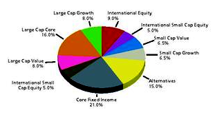Asset classes and their weightings for a particular portfolio
The expected return of a diversified portfolio is the expected return of each of its underlying investments times the weight the investment receives.
Calculate the expected returns of an investment portfolio
Asset allocation is the theory that any portfolio should have a set of target weights for different asset classes based on time frame and risk tolerance. There are two key principals at work in this theory. The first is that everything goes in cycles and the second is that often when one things is ebbing, the other is flowing. Let's make this very simple and say that bonds return 4% in a bad year, 6% in an average year, and 8% in a good year, and stocks return -5% in a bad year, 10% in an average year, and 15% in a good year.
Stock have cycles and when stocks do well, bonds are more likely to do poorly and vice versa. Let's say we have a portfolio of \$100,000 that has a target mix of 60% stocks and 40% fixed income and, therefore, has \$60,000 in stocks and \$40,000 bonds. Stocks have a good year and bonds have a bad one, and now we have \$69,000 invested in stocks and \$41,600 in bonds. At this point, we have a total portfolio of \$110,600 and an asset mix of roughly 62% stocks and 38% bonds. We began with a target mix of 60-40 but since the equity market fared better than fixed-income market, we are a little off-balance. So how do we fix that? We could sit and wait and watch what happens, or we could shift \$2,640 from our equity position to a fixed-income position. Remember, things go in cycles, so we expect that if stocks do well relatively to bonds that sometime in the future, bonds will do well relative to stocks. By shifting \$2,640 from our equity position to our fixed-income position, we are essentially selling stocks after they have appreciated (at a high) and buying bonds after they have failed to appreciate (at a low). Look at how the different asset mixes fare, based on a 10-year period that is consistent with historical averages.
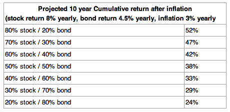Different returns are expected for different asset allocations given historical averages
Assuming rebalancing, the expected return of a diversified portfolio is simply the expected return of each of its underlying investments times the allocation weight the investment receives.
The theory can feature different strategies, including strategic asset allocation, tactical asset allocation, and others, but the ideas are the same as the implications for return. A portfolio should consist of a variety of classes of assets to take advantage of zero and negative correlations between those classes, and it should be designed to achieve a target mix of assets that are rebalanced when one grows in relation to another.
A diversified portfolio containing investments with small or negative correlation coefficients will have a lower variance than a single asset portfolio.
Describe how a portfolio is diversified to minimize variance
A primary reason for a diversified asset allocation is the fact that markets often sway away from each other, and it can be beneficial to have a portion of your holdings invested in bonds in years when stocks do badly. As you can see from the graphic below, there is still considerable risk to an investor who is heavily invested in stocks, even with a blended portfolio.
Remember that in 2000, the Nasdaq lost 39.28% of its value (4,069.31 to 2,470.52) and in 2001, the Nasdaq lost 21.05% of its value (2,470.52 to 1,950.40). Had your portfolio consisted of a set of stocks that approximated the Nasdaq index, you would have lost roughly 52% of your portfolio's value (from 4069.31 to 1950.40).
In actuality, as mentioned before, there are more than two basic asset classes. Here are some examples of the the types of assets that may be included in a diversified strategy:
A fundamental justification for asset allocation (or Modern Portfolio Theory) is the notion that different asset classes offer returns that are not perfectly correlated, hence diversification reduces the overall risk in terms of the variability of returns for a given level of expected return. Asset diversification has been described as "the only free lunch you will find in the investment game". Academic research has painstakingly explained the importance of asset allocation and the problems of active management (see academic studies section below). Although risk is reduced as long as correlations are not perfect, it is typically forecast (wholly or in part) based on statistical relationships (like correlation and variance) that existed over some past period. Expectations for return are often derived in the same way.
A diversified portfolio containing investments with small or negative correlation coefficients will have a lower variance than a similar portfolio of one asset type. This is why it's possible to reduce variance without compromising expected return by diversifying.
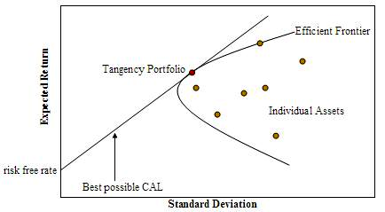Diversifying asset classes can reduce portfolio variance without diminishing expected return
Surprise announcements can trigger a chain of events that affect the stock price of a particular company by changing investor expectations.
Describe how a surprise announcement can influence a stock's price
Surprise announcements can trigger a chain of events that affect the stock price of a particular company, competitors and other companies that might be suppliers to or customers of the primary company.
Announcements of Mergers and acquisitions (M&A) are a frequent type of surprise announcements. Mergers and acquisition is a category of announcement that deals with corporate structure. When the announcement is publicly made, analysts use that information to factor into the company's long run market outlook. A merger or an acquisition could signal to an analyst that one particular company is financially weak, and it could downgrade its long run outlook for that company. Alternatively, an M&A announcement could also signal to analysts that a company has a chance to increase its market share and henceforth its profits. These announcements typically make the biggest splash in a top-heavy industry, such as automobiles, pharmaceuticals, or healthcare, with a few strong players dominating a market that is researching, developing, and innovating new products.
Other announcements that can have a variety of impacts on asset valuation can come in the form of a major court decision, news of development of new research, and innovation, FDA approval of a new drug or a new cheap source of raw materials. Any of this news has the potential to impact a particular company and, in some cases, competition, suppliers, and customers of that company. In many cases, there will be signals that analysts pick up on ahead of time. Investors who are actively making investment decisions based on a particular company or within a particular industry need to be aware of how a surprise announcement might affect their investment.
Fixed-income market participants also make forecasts on the long-run health of a company to project the likelihood an issuer of debt might default. A company's instruments are subject to move in the event of an aforementioned announcement or if a private rating agency (Standard and Poors or Moody's) changes its outlook on their debt. If a news announcement is seen as positive for a company, its fixed-income instruments might seem more creditworthy, its bonds will rise in price, and its yield will decline. The inverse is also true.
Take a look at the creditworthiness ratings of different countries by Standard and Poors.
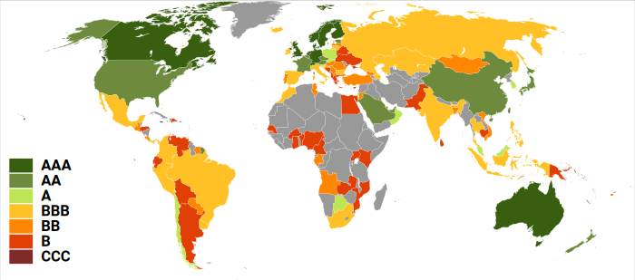An example of the credit ratings prescribed by Standard & Poor's as a result of their respective long-term liability analysis for debt issued at the national government level. Countries issue debt to build national infrastructure. Look how expensive it is to raise capital for such projects based on geographic region.
The Value of a Company.
Describe how analysts use announcements, news, and returns to evaluate stock
The words stock and equity are used interchangeably, because a stock is reflective of a piece of ownership in a company. In general, investors buy stocks for two reasons: because they expect the company to grow its product and market share over time (growth) or because they feel that the company is undervalued based on its current stock price. Analysts may research a stock from a fundamental or a technical lens.
Fundamental analysis involves analyzing a company's financial statements and health, its management and competitive advantages, and its competitors and markets . Technical analysts study the patterns and price fluctuations and attempt to forecast the direction of prices through the study of past market data, primarily price, and volume. A stock's price is essentially determined by the buying and selling decisions of fundamental and technical analysts, who often manage large sums of money and have access to broad pools of data. Some stocks tend to fluctuate more than others on a day-to-day basis, and the metric called Beta describe's the variance of a stocks day to day price. Stocks that tend to experience larger swings have higher beta values and expose owners to more specific risk.
In order for a company to be publicly traded on an exchange, it must comply with the regulations of that exchange board (NYSE or NASDAQ). Public investors are entitled to complete, accurate, and timely financial information about their investments. Companies generally announce updated financial figures on a quarterly basis. These figures include their current revenues, expenses and profits, and investors use this information to assess the company's financial health. For most established companies, these reports are consistent and predictable and barely affect a stock's price. Macy's may announce higher profits in quarter 4 than quarter 3, but its price might not move, because analysts expected that Christmas would bring additional sales based on past data.
When a company announces its earnings as higher or lower than expected, the stock may experience a sudden shift in value. A higher than expected profit may come from increased revenues or decreased expenses. If a growing company announces higher than expected profits because of decreased expenses, it signals to investors that the company has found a cheaper way to produce its good. That could in turn affect the expected returns of a competitor's stock, either positively or negatively, depending on how analysts forecast the effect. The announcement of higher than expected sales from Ford could affect its stock price significantly, and it could set into motion a chain of events. If analysts believe that the trend is based on a shift away from public transportation, it could raise the price of GM, Toyota, and maybe even Chevron. If Nvidia, a company who produces micro-processors for smart phones, announces higher than expected profits on reduced production costs, it might not only cause their stock to spike, but it could lead to a decrease in the price of the stock of their primary competition, Intel.
In general, fluctuations in one stock will often lead to fluctuations in another stock. There are times when the markets are relatively stable and those when it is relatively volatile. Consider the image below. The correlation of 0.769 suggests that the volatility of the stock market in one month is very highly correlated to that in the previous month.
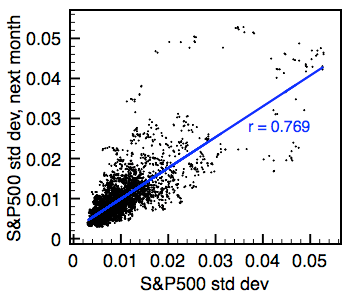Data shown is from the period of Jan. 1990-Sep. 2009. Volatility is measured as the standard deviation of S&P 500 one-day returns over a month's period.
There are many types of financial risk, including asset-backed, prepayment, interest rate, credit, liquidity, market, operational, foreign, and model risk.
Classify different securities by the types of financial risk associated with the investment opportunity
The term "financial risk" is broad, but can be broken different categories to understand it better.
Asset-backed risk affects investments in asset-backed securities such as home loans. In order to finance home sales, banks issue bonds that serve as a debt obligation to its buyer. The buyer of the debt is essentially receiving the interest from the bank that the home-buyer is paying to it.
Prepayment risk is the risk that the buyer goes ahead and pays off the mortgage. Therefore, the buyer of the bond loses the right to the buyer's interest payments over time.
Interest rate risk refers an asset whose terms can change over time, such as a Variable Rate Mortgage payment.
Credit risk or default risk, is the risk that a borrower will default (or stop making payments).
Liquidity risk is the risk that an asset or security cannot be converted into cash in a timely manner. Some investments (i.e. stocks) can be sold immediately at the current market rate and others (i.e. houses) are subject to a much higher degree of liquidity risk.
Market risk is the term associated with the risk of losing value in an investment will lose value because of a decline in the market.
Operational risk is another type of risk that deals with the operations of a particular business. If you are invested in the Boston Red Sox, your operational risk might include the chance that starting pitchers and recent acquisitions won't perform, that your manager will turn the clubhouse into a mess, or that ownership will not be able to execute a long term strategy. Any of these risks might result in decreased revenues from ticket sales.
Foreign investment risk involves the risk associated with investments in foreign markets.
Model risk involves the chances that past models, which have been used to diversify away risk, will not accurately predict future models.
A recent phenomenon that applies the concepts of these risks and how they interact with each other happened in 2008 when the housing market crashed. Can you find an example of each form of risk here?
Leading up to the crisis, many people received loans to buy houses which they really couldn't afford. The mortgages often featured variable rate annuities, meaning that the interest rate terms of the mortgage started low and increased over time. Over the past 20 year period, house prices had risen constantly and investors assumed the trend would continue. Buyers worried about an adjustment to their interest rate, and all of a sudden a 1500 monthly payment became 2000. When interest rates climbed 2 percentage points and the mortgage climbed to \$2000, some owners had to default (stop making payments) . They were promised that their investment would appreciate in value and they would be able to refinance it. The home loans were packaged and shipped off to investors all over the world in the form of complex investment vehicles. They seemed rewarding and highly safe at first, but then a few started breaking down. By now, these vehicles had made their way all the way around the world. When some investors defaulted, the world realized there were no mechanics around to fix these vehicles. After a few vehicles broke down, no one wanted to buy them, leading to the worst crash across world markets since 1929.
The higher the risk undertaken, the more ample the expected return and the lower the risk, the more modest the expected return.
Calculate the risk of a portfolio using computational methods
Risk refers to the variability of possible returns associated with a given investment. Risk, along with the return, is a major consideration in capital budgeting decisions. The firm must compare the expected return from a given investment with the risk associated with it. Higher levels of return are required to compensate for increased levels of risk. In other words, the higher the risk undertaken, the more ample the return - and conversely, the lower the risk, the more modest the return.
This risk and return tradeoff is also known as the risk-return spectrum. There are various classes of possible investments, each with their own positions on the overall risk-return spectrum. The general progression is: short-term debt, long-term debt, property, high-yield debt, and equity. The existence of risk causes the need to incur a number of expenses. For example, the more risky the investment the more time and effort is usually required to obtain information about it and monitor its progress. Moreover, the importance of a loss of X amount of value can be greater than the importance of a gain of X amount of value, so a riskier investment will attract a higher risk premium even if the forecast return is the same as upon a less risky investment. Risk is therefore something that must be compensated for, and the more risk the more compensation is required.
When a firm makes a capital budgeting decision, they will wish, as a bare minimum, to recover enough to pay the increased cost of investment due to inflation. Thus, inflation is a pivotal input in a firm's cost of capital. However, since interest rates are set by the market, it happens frequently that they are insufficient to compensate for inflation.
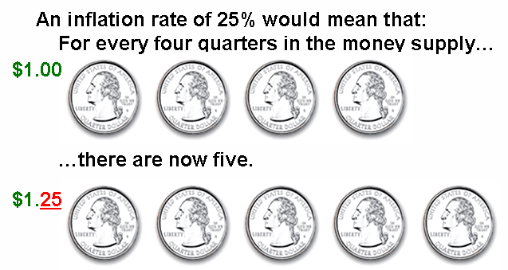Inflation is a rise in the general level of prices of goods and services in an economy over a period of time.
Risk aversion also plays an important role in determining a firm's required return on an investment. Risk aversion is a concept based on the behavior of firms and investors while exposed to uncertainty to attempt to reduce that uncertainty. Risk aversion is the reluctance to accept a bargain with an uncertain payoff rather than another bargain with a more certain, but possibly lower, expected payoff. For example, a risk-averse investor might choose to put his or her money into a bank account with a low but guaranteed interest rate, rather than into a stock that may have high expected returns, but also involves a chance of losing value. Risk aversion can be thought of as having three levels:
Beta is a measure firms can use in order to determine an investment's return sensitivity in relation to overall market risk. Beta describes the correlated volatility of an asset in relation to the volatility of the benchmark that said asset is being compared to. This benchmark is generally the overall financial market and is often estimated via the use of representative indices, such as the S&P 500. Beta is also referred to as financial elasticity or correlated relative volatility, and can be referred to as a measure of the sensitivity of the asset's returns to market returns, its non-diversifiable risk, its systematic risk, or market risk. Higher-beta investments tend to be more volatile and therefore riskier, but provide the potential for higher returns. Lower-beta investments pose less risk, but generally offer lower returns.
A portfolio's expected return is the sum of the weighted average of each asset's expected return.
Calculate a portfolio's expected return
Let's say that we have a portfolio that consists of three assets, and we'll call them Apples, Bananas, and Cherries. We decided to invest in all three, because the previous chapters on diversification had a profound impact on our investment strategy, and we now understand that diversifiable risk doesn't pay a risk premium, so we try to eliminate it.
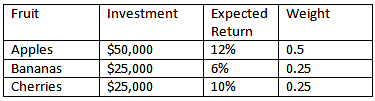How would you calculate the expected return on this portfolio?
The return of our fruit portfolio could be modeled as a sum of the weighted average of each fruit's expected return. In math, that means:
Where A stands for apple, B is banana, C is cherry and FMP is farmer's market portfolio. W is weight and E(RX) is the expected return of X. A good exercise would be to calculate this figure on your own, then look below to see if you completed it accurately.
Here's what you should get:
In reality, a portfolio is not a fruit basket, and neither is the formula. A math-heavy formula for calculating the expected return on a portfolio, Q, of n assets would be:
What does this equal?
Remember that we are making the assumption that we can accurately measure these outcomes based on what we have seen in the past. If you were playing roulette at a casino, you may not know if red or black (or green) is coming on the next spin, but you could reasonably expect that if you bet on black 4000 times in a row, you're likely to get paid on about 1900 of those spins. If you go to Wikipedia, you can review a wide variety of challenges to this model that have very valid points. Remember, the market is random: it is not a roulette wheel, but that might be the best thing we have to compare it to.
The risk in a portfolio is measured as the amount of variance that investors can expect based on historical data.
Calculate a portfolio's variance
An investor can reduce portfolio risk by holding combinations of instruments which are not perfectly positively correlated (correlation coefficient). In other words, investors can reduce their exposure to individual asset risk by holding a diversified portfolio of assets. Diversification may allow for the same portfolio expected return with reduced risk.
Three assets (apples, bananas, and cherries) can be thought of as a bowl of fruit. The index is a a fruit basket. A full fruit basket probably has 10 or 15 different fruits, but my bowl will be efficient as much as its statistical parameters (risk and return) mimic those of the whole basket. In this unit, we are talking about calculating the risk of a portfolio. In addition, we can extend the implications made by the security market line theory from individual assets to portfolios. How does my bowl of fruit compare to the whole basket and how does that compare to other bowls out there?
To calculate the risk in my bowl, we need a little more background information on fruit markets. First, we are going to need the variance for each fruit. Remember that the standard deviation answers the question of how far do I expect one individual outcome to deviate from the overall mean. And variance is that number squared. Mathematically, the formula is:
It is the expected value of the difference between the individual return in a given day (R) and the average outcome average return over a year (E(R)).
In order to calculate the variance of a portfolio of three assets, we need to know that figure for apples, bananas, and cherries, and we also need to know the co-variance of each. Co-variances can be thought of as correlations. If every time bananas have a bad day, so do apples, their co-variance will be large. If bananas do great half of the time when cherries do bad and bananas do terrible the other half, their co-variance is zero. If there is zero correlation among all three fruits, we have cut our risk in thirds by owning all three, but if they are perfectly correlated, we haven't diversified away any of our risk.
In reality, they are probably positively correlated, since they are all fruits, but not at all perfectly. Apples and bananas grow in different climates so their performance may be a result of weather patterns in either region. Apples may be a substitute for cherries when cherries are expensive. The overall risk of the portfolio would take into account three individual variances and three co-variances (apples-bananas, apples-cherries, and bananas-cherries) and it would reduce the overall portfolio to the degree that they are uncorrelated.
The formula to compute the co-variance between returns on X and Y:
This means what do I expect to see, in a given time period, when I multiply how much X returned off its average performance from how much Y returned off its average. But notice how it could be positive or negative. And if X tends to be up when Y is down, that would make them two good hedges. And it can be shown that:
From co-variance, we get correlation coefficients:
In finance and statistics, the greek letter rho squared represents variance.
So now that we have figures to help us measure the risk and reward of our individual fruit bowl, we can go look at historical figures to determine the expected returns and the risk of the index that comprises the entire fruit basket industry. If our portfolio of investments has diversified away as much risk as is possible given the costs of diversifying, our portfolio will be attractive to investors. If our bowl does not diversify away enough risk, it will not lie on the Security Market Line for those who we are trying to recruit into buying our portfolio.
The same principles that were applied to individual investments in the Understanding the SML section can be applied to the market for portfolio investments. If an institutional investor, such as a city pension fund, looked at two portfolios with identical returns and different risks, they would choose the portfolio that minimized its risk. Thus the only portfolios that are efficient investments are those that effectively diversify the underlying risk away and price their investment efficiently .
The formula shows that the overall variance in a portfolio is the sum of each individual variance along with the cross-asset correlations.
A portfolio's Beta is the volatility correlated to an underlying index.
Calculate a portfolio's beta
In this section, we will discuss the idea of calculating a Beta coefficient to help investors measure the risk-reward trade-off for a blended pool of investments.
In this case, it is important to remember that a portfolio may represent the seller side of the market and the buyer can be thought of an institutional investor or a mutual fund. A portfolio's Beta is the volatility correlated to an underlying index. If we think of the S&P 500 as the index, a portfolio that fluctuates identically to the market has a Beta of 1. What would the following portfolios have for Beta values?
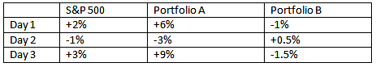Two hypothetical portfolios; what do you think each Beta value is?
Do you have an answer? Beta is a normalized variable, which means that it is a ratio of two variances, so you have to compare the volatility of returns to the benchmark volatility. Portfolio A has a direct relationship with the S&P 500 – it is scaled by three times each day. When the market is up 2%, it is up 6%. Thus, the portfolio would have a Beta value of 3. Portfolio B is a different situation; it is also directly proportional, but in the negative direction. Every time the market is up 1%, the portfolio is down half a percent. The Beta for this portfolio, when compared with the S&P 500 benchmark, would be -0.5. A Beta of zero in this situation doesn't necessarily mean a risk free asset, it simply means that it is not correlated with the benchmark.
In reality, the numbers would rarely work out this cleanly, but this is a good model to demonstrate some key concepts. A pension fund that seeks to maximize its reward and limit its risk might be interested in each of these portfolios. If you invested equal amounts in each portfolio, it would leave you over-exposed to the market because it would have a Beta of 1.5. But let's say you have \$300,000 to invest; you could put that in a fund that is indexed to the S&P 500 and is perfectly correlated with it.
Every time the S&P gains 1%, your fund nets you 100,000 in fund A and S Misplaced &3,000 and your position in fund B pays you 2,000, which is less damage than you would have suffered on your position in the S&P index fund. On days when the S 3,000 and your fund A position loses 2,000 and your upside is limited by the same amount, your downside is reduced.
A pension fund is a good example of an institutional client that could extend the principles of diversification to a pool of blended portfolios. A city with an aging workforce needs to be protected from downside risk. It is the same principle as an employee approaching retirement; it can afford to have a heavier position in the S&P 500 if it has a position in portfolio B.
In general, diversification can reduce risk without negatively impacting expected return.
Describe unsystemic risk
Did your grandmother ever warn you not to put all your eggs in one basket? Did you know what she was talking about? The implication is obvious. If you put all your eggs in one basket, and that basket breaks, you are stuck with nothing to fry up into an omelet.
Grandma wasn't telling you to grow up and be an omelet chef, she was actually giving you some sage advice that applies to your future as a portfolio manager. We have talked about diversification previously, and this section will follow from that. Remember, we talked about every particular investment having an expected return and a variance. If you are managing a pool of assets, you want to get positive returns without being in danger of "losing your shirt. " The probability that one stock goes belly up is much higher than that the whole stock market does. In finance, systematic risk is the term associated with risk that can be diversified away by investing in a broader pool of assets.
Diversification relies on the lack of a tight positive relationship among the assets' returns, and works even when correlations are near zero or somewhat positive. On the flip-side, hedging is the tactic that relies on negative correlations among assets. Diversification comes with a cost associated with it, and some might point out that it is possible to over-diversify. The idea is that you can only diversify away so much risk, that the marginal returns on each new asset are decreasing, and each transaction has a cost in terms of a transaction fee and also research costs. At some point, it just isn't worth it anymore. The risk that can be diversified away is called "unsystematic risk" or "diversifiable risk. "
Some investors like to call themselves fans of active or passive management. In fact, two of the biggest mutual fund managers–Fidelity and Vanguard–take opposite stances on this issue and use it as a selling point to customers. Proponents of passive management say the market knows best, and they seek a portfolio that has an underlying pool that mimics a benchmark index (think S&P 500). The other guys–active managers–believe that their fundamental analysis yields them a competitive advantage. They might decide Microsoft's stock is underpriced based on changing demographics to the labor supply in Seattle, or they might decide that political stability has improved emerging markets in Sub-Saharan Africa but the yield on their bonds hasn't taken that into account. This debate is all held on the margins. Research has shown that there is a clear advantage in any portfolio to hold at least 30 different positions.
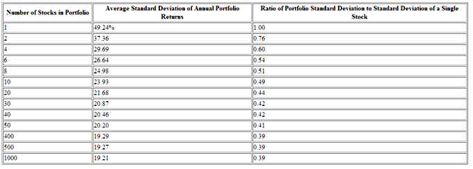In 1977 Elton and Gruber worked out an empirical example of the gains from diversification. Their approach was to consider a population of 3,290 securities available for possible inclusion in a portfolio, and to consider the average risk over all possible randomly chosen n-asset portfolios with equal amounts held in each included asset, for various values of n. Their results are summarized in the following table. It can be seen that most of the gains from diversification come for n≤30.
Systematic risk is intrinsic to the market, and thusly diversification has no effect on its presence in investments.
Describe how systemic risk influences the stock market
Recall that previously we talked about the security market line and the implication that investors require more compensation for extra risk. One might pay the same amount for a safe investment as for an investment carrying more risk; however, the riskier investment will, in theory, provide a higher return. This is the principle behind the security market line . Diversification is a technique for reducing risk that relies on the lack of a tight positive relationship among the returns of various types of assets. By diversifying a portfolio of assets, an investor loses the chance to experience a return associated with having invested solely in a single asset with the highest return. On the other hand, the investor also avoids experiencing a return associated with having invested solely in the asset with the lowest return -- sometimes even becoming a negative return. Thus, the role of diversification is to narrow the range of possible outcomes.
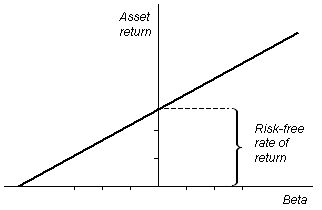Diversification theory says that the only risk that earns a risk premium is that which can't be diversified away.
As a result, the portion of risk that is unsystematic -- or risk that can be diversified away -- does not require additional compensation in terms of expected return. For example, consider the case of an individual who buys 50 corporate bonds from a single company. The individual receives a certain yield based on the purchase price. However, if unexpected business risks lead to liquidity problems, the company might go bankrupt and default on its loans. In such a case, the investor will lose the entirety of the investment. Conversely, if the investor buys a single bond from 50 different corporations who have similar credit ratings, then one instance of insolvency will have a far less drastic effect on the investor's portfolio.
Now, imagine that these 50 corporations are all given a lesser credit rating because of the risk of their overall market segment. In this case, the individual is still at risk to lose some or all of the initial investment. This type of risk cannot be diversified away, and is referred to as systematic risk. This is the portion of risk that pays the risk premium, because the risk associated with this particular segment of the market is more tightly linked to the risk of the market as a whole. This risk is present regardless of the amount of diversification undertaken by an investor.
Overall riskiness of an asset is composed of its own individual risk (beta) along with its risk in relation to the market as a whole.
Use a stock's beta to estimate a stock's daily growth or decline.
A certain amount of risk is inherent in any investment. Risk can be defined, generally, as the potential that a chosen action or activity (including the choice of inaction) will lead to a loss or an undesirable outcome. The notion of risk implies that a choice having an influence on the outcome exists. More specifically to finance, risk can be seen as relating to the probability of uncertain future events. In return for undertaking risk, investors expect to be compensated in such as a way as to reasonably reward them. This is a central them in the subject of finance. In the financial realm, two types of risk exist: systematic and unsystematic.
Systemic risk is the risk associated with an entire financial system or entire market. This type of risk is inherent in all marketable securities and cannot be diversified away. On the other hand, unsystematic risk is risk to which only specific classes of securities or industries are vulnerable. This type of risk is uncorrelated with broad market returns, and with proper grouping of assets can be reduced or even eliminated. Because of this characteristic, investors are not rewarded for taking on unsystematic risk.
Systematic risk can be understood further using the measure of Beta. This is a number describing the correlated volatility of an asset in relation to the volatility of the benchmark that said asset is being compared to -- usually the market as expressed in an index.
Beta is a measure that relates the rate of return of an asset, ra, with the rate of return of a benchmark, rb.
Values of Beta can be interpreted using the following information:
Risk Premium
The term risk premium refers to the amount by which an asset's expected rate of return exceeds the risk free rate. The difference between the return of an asset in question and that of a risk-free asset -- for instance, a US Treasury bill -- can be interpreted as a measure of the excess return required by an investor on the risky asset. The risk premium, along with the risk-free rate and the asset's Beta, is used as an input in popular asset valuation techniques, such as the Capital Asset Pricing Model.
The security market line displays the expected rate of return of a security as a function of systematic, non-diversifiable risk.
Describe the Security Market Line
The security market line, also known as the "characteristic line", is the graphical representation of the capital asset pricing model. It is a hypothetical construct based on a world of perfect information. In the absence of perfect information, we can more or less assume historical data will give us an accurate expectation of what kind of returns and risk to expect with a particular investment of capital. The security market line graphs the systematic, non-diversifiable risk (stated in terms of beta) versus the return of the whole market at a particular time, and shows all risky marketable securities. The security market line is defined by the equation:
Look at the equation and remember that old formula of a line: y = mx + b. In this case it looks rearranged, like y = b + mx, but the real question is what do the slope and y-intercept actually represent?
The Y-intercept of the SML is equal to the risk-free interest rate. Recall that the risk-free interest rate is the theoretical rate of return of an investment with no risk of financial loss. When used in portfolio management, the SML represents the investment's opportunity cost -- i.e., investing in a combination of the market portfolio and the risk-free asset. All the correctly priced securities are plotted on the SML. The assets that lie above the line are undervalued because for a given amount of risk, they yield a higher return. The assets below the line are overvalued because for a given amount of risk, they yield a lower return.
The slope of the SML is equal to the market risk premium and reflects the risk return trade off at a given time. The idea of a security market line follows from the ideas asserted in the last section, which is that investors are naturally risk averse, and a premium is expected to offset the volatility of a risky investment. In a perfect world, with perfect information, any capital investment is on the security market line. The idea of a security market line is important for understanding the capital asset pricing model. Let's look at the line again:
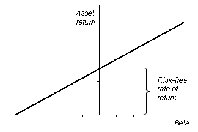This is an example of a security market line graphed. The y-intercept of this line is the risk-free rate (the ROI of an investment with beta value of 0), and the slope is the premium that the market charges for risk.
The plotted location of an instrument on the SML has consequences on its price, return, and cost of capital it contributes to a firm.
Describe the impact of the SML on determining the cost of capital
The location of a financial instrument above, below, or on the security market line will lead to consequences for a company's cost of capital.
The security market line is a graphical representation of the capital asset pricing model that illustrates the idea that investments are priced efficiently based on the expected return and beta-value (risk). Companies often turn to capital markets in order to generate funds -- using the issuance of either debt or equity. The cost of obtaining funds in such a manner is known as a company's cost of capital. There is a tradeoff between a security's price and its expected return. If the price of the instrument goes up, its expected returns go down, and vice versa. A firm that is raising capital would like to sell these instruments for a high price, and investors want to buy them for a low price.
An instrument plotted below the SML would have a low expected return and a high price. This market situation would be quite attractive from the perspective of a company raising capital; however, such an investment wouldn't make sense for a rational buyer. The rational investor will require either a higher return or lower price, which will both result in a higher cost of capital for the company.
An instrument plotted above the line has a high expected return and a low price. This would not be an attractive market situation for a company looking to raise capital. Such a firm wants to raise as much money as possible, which means getting investors to pay the highest price possible.
An instrument plotted on the SML can be thought of to be fairly priced for the amount of expected return. Such an instrument would be a fair investment from an individual's perspective, and would lead to a fair cost of capital from a company's perspective.
{kind=link}
{kind=link}
{kind=link}
{kind=link}
{kind=link}
{kind=link}
{kind=link}
{kind=link}
{kind=link}
{kind=link}
{kind=link}
{kind=link}
{kind=link}
{kind=link}